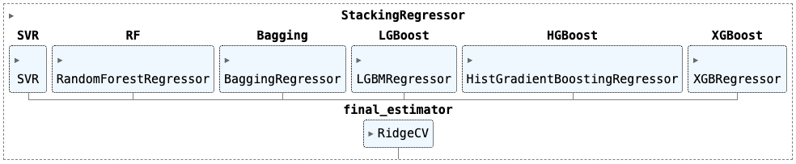
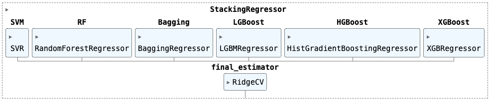

Современные алгоритмы машинного обучения обычно превосходят классические линейные модели в точности прогнозов, но при этом сложны в интерпретации. Некоторые алгоритмы имеют встроенный функционал приоритезации предикторов, что позволяет выявить наиболее информативные. Тем не менее, этого недостаточно для оценки взаимосвязей.
Целью данного проекта является создание простой в интерпретации модели
Цель проекта
Этапы проекта
Секция 1: Исследование и подготовка данных
На первом этапе проводятся необохдимые процедуры анализа и подготовки данных: заполняются пропущенные значения, выявляются и исправляются противоречия в данных, определяются наиболее значимые предикторы, создаются дополнительные предикторы, осуществляются необходимые преобразования. На каждом этапе преобразования данных обучается промежуточная ML-модель LightGBM.
Результаты:
очищенный и преобразованный датасет; датасеты для пайплайнов секции машинного обучения; три промежуточные ML-модели.
Секция 2: Регрессионный анализ
В данном разделе проводится исследование эластичной сети и линейной регрессии без регуляризации. Сначала строится эластичная сеть, подбираются оптимальные гиперпараметры и оцениваются разные наборы предикторов. Далее десять наиболее релевантных претикторов используются для обучения простой линейной регрессии без регуляризации, которая и будет использоваться на первом уровне итогового оценшика HPP. В заключении проводится диагностика получившейся регерссии и сравнение её с эластичной сетью на сэмплированных данных.
Результаты:
линейная модель первого уровня итогового оценщика HPP эластичная сеть для сравнения с другими моделями.
Секция 3: Машинное обучение
Секция машинного обучения состоит из двух частей.
В первой части осуществляется выбор алгоритма, который будет прогнозировать
Во второй части секции по той же схеме с 20-фолдовой кросс-валидацией выбирается лучшая модель машинного обуения для прогноза
Результаты:
ML-модель для прогноза остатков регрессии; ML-модель для прогноза цены дома.
Секция 4: Подведение итогов
На заключительном этапе проводится сравнение имеющихся моделей, делается заключение об эффективности оценщика HPP, исследуются остатки его прогнозов, предлагаются шаги для дальнейшего исследования данных и развития структуры HPP.
Результаты:
оценка HPP; рекомендации по дальнейшим шагам.
Краткие результаты
Предсказательная эффективность HousePricePredictor (HPP)
График показывает эффективность прогнозирования семи моделей, построенных на разных стадиях проекта.
Base - базовая модель LightGBM после удаления пропусков; Base (Clean) - промежуточная модель LightGBM после очистки данных; Base (FE) - промежуточная модель LightGBM после генерации новых признаков; Elastic Net - лучшая регрессионная модель (эластичная сеть); SVM - лучшая линейная модель; Stacking - лучшая ML-модель; HousePricePredictor(HPP) - модель, полученная в результате комбинации линейной регрессии и стэкинга.

В ходе проекта удалось снизить ошибку RMSE c 0.1216 у базовой модели до 0.0969 итогового оценщика HousePricePredictor. На этапе преобразования наибольший вклад внесла очистка данных, а дополнительно сгенерированные предикторы были полезны как для линейной регрессии, так и для сложных алгоритмов машинного обучения (см. '8. Создание дополнительных предикторов', '11.2. Линейная регрессия', '13. Оценка независимых ML-моделей').
Результат итогового оценщика HPP превысил ожидания - это единственная модель, у которой ошибка на тестовых данных меньше 0.1. Доверительные интервалы средней ошибки и предиктивные интервалы у всех моделей примерно одинаковы.
Три лучшие модели демонстрируют неплохой разброс - их прогнозы достаточно кучны, за исключением нескольких выбросов, хорошо заметных на нижнем графике. Для HPP это пять элементов с заметно более высоким значением ошибки.
Интерпретациия
Ядром HousePricePredictor является линейная регрессия. Коэффициенты и доверительные интервалы представлены в таблице ниже.

Предикторы с наибольшим коэффициентом - это дополнительно сгенерированный предиктор
С увеличением средневзвешенной площади этажей на 1% цена увеличивается на 0.144%; С увеличением качества материалов на 1 пункт цена увеличивается на 8.8%; С увеличением возраста дома на 1 год цена уменьшается на 8.5%
Интерпретацию остальных коэффцииентов см. в разделе '11.2. Линейная регрессия'.
Сравнение актуальных и предсказанных HousePricePredictor цен

На оси абсцисс - элементы, отсортированные по суммарной площади жилого пространства
В первой части для небольших домов значения ошибок невелики, и модель чаще переоценивает дома. На среднем отрезке ошибки увеличиваются, предсказания модели выравниваются. На финальном отрезке для больших домов вновь чаще наблюдается переоценка, а ошибки в абсолютных величинах иногда превышают 50000$.
2. Описание датасета
В проекте используется один из датасетов Kaggle. Это типичная задача регрессии, в которой требуется спрогнозировать стоимость дома, используя для этого значения его характеристик и исторические данные о предыдущих сделках.
Число предикторов: 79;
Число элементов: 1460;

После разделения датасета на обучающий (train) и проверочный (test), число элементов составило 1314 и 146 соответственно.
Целевая переменная
Распределение целевой переменной напоминает гамма-распределение. Это одномодальное распределение с вершиной в районе 150000$ и правосторонней ассиметрией.

Для выравнивания формы распределения и снижения влияния экстремальных значений используется натуральный логарифм.

Характеристики
В датасете 79 независимых переменных:
Количественных признаки - 34; Порядковые признаки - 18; Категориальные признаки - 27.
Группы предикторов
Для более детального анализа в ходе работы предикторы разделяются на группы, соответствующие общей логике. Этот подход полезен для генерации дополнительных признаков, являющихся производными от основных характеристик, а также в овремя очистки и проверки данных на логические противоречия.
Всего сформировано 12 категорий предикторов:
Общая оценка качества Гараж Подвал Предикторы, связанные с площадью Комнаты Год постройки дома/гаража, модернизации, и т.д. Двор и область вокруг дома Строительный материал Конструкционные особенности Состояние (износ) Удобства Окружение (район, улица, и т.д.) Организационные аспекты продажи
3. Работа с отсутствующими значениями
Категориальные переменные
На первый взгляд у некоторых категориальных переменных число пропущенных значений крайне велико и достигает почти 100% от общего числа элементов.
Порядковые

Номинативные

Заполнение пропусков
Большое количество пропусков объясняется тем, что большинство NaN в этом датасете эквивалентны значению "Отсутствует" (к примеру, NaN для переменной "бассейн" означает, что в этом доме отсутствует бассейн). После приведения данных в соответствие с описанием и замены NaNs на 'NA' осталось только одно пропущенное значение в переменной electrical (заполняется медианным значением).
Количественные переменные
У трех количественных переменных присутствуют пропущенные значения: lotfrontage, garageyrblt, masvnrarea.

lotfrontage - длина участка улицы, соприкасающейся с придомовой территорией

garageyrblt - год постройки гаража
masvnrarea - площадь облицовки фундамента
4. ML-модель №1 (базовая)
LightGBM используется в качестве базовой ML-модели как оптимальный с точки зрения эффективности и производительности.
Катеориальные признаки кодируются с помощью OrdinalEncoder из библиотеки Feature-engine (категории заменяются целыми числами, порядок которых определяется согласно возрастанию среднего значения целевой переменной).
Подбор гиперпараметров проводится в два этапа. На первом этапе тестируется широкий диапазон значений и определяется базовые параметры. После этого проводится еще один поиск в окрестностях базовых параметров. В обоих случаях используется GridSearch от Scikit-learn с 20-fold кросс-валидацией.
Чтобы предотвратить утчеку данных во время подбора гиперпараметров используется Pipeline от Scikit-learn.
Метрика качества модели - RMSE (среднеквадратичная ошибка).
Результаты 1-го этапа подбора гиперпараметров
Лучшие результаты (RMSE в районе 0.130) показывают сложные модели с большим числом деревьев (> 25), увеличение числа листьев также положительно сказывается на эффективности модели. Оптимальная скорость обучения - 0.1. RMSE лучшей модели - 0.1282.

Результаты 2-го этапа подбора гиперпараметров
Ошибка уменьшилась незначительно - с 0.1282 до 0.1276.

ML-модель №1 (базовая)
Таким образом, базовая модель (RMSE: 0.1276) имеет следующую конфигурацию:

Это первый ориентир относительного того, насколько имеющиеся данные подходят для предсказания цены домов. Дополнительно базовая модель дает представление о наиболее значимых предикторах. Отметим, что 7 из 10 ключевых предикторов - это площадь того или иного помещения продаваемого дома. На общем фоне заметно выделяется суммарная площадь жилого пространства (grlivarea).

5. Исследование данных
Матрица корреляций
Матрица корреляций деомнстрирует линейные взаимосвязи предикторов с целевой переменной. В топ-10 наиболее влияющих признаков в основном оценки площади и качества различных составляющих дома.

Полный набор различных визуализаций представлен в соответсвующем блокноте _Section2-Explore-and-Clean.ipynb_. Ниже приведены несколько типовых графиков.
Количественные признаки
Ключевые инструменты для исследования количественных переменных - гистограммы и диаграммы рассеяния с добавлением линии регрессии.

Категориальные признаки
Ключевые инструменты для исследования катеориальных переменных - диаграмма рассеяния с лининей регрессии и точечная диаграмма.


Примеры взаимосвязи некоторых категориальных переменных с ценой


6. Очистка данных
6.1. Проверка данных на несоответствие
В этом пункте данные проверяются на логическое несоответствие. Например, суммарная площадь жилого пространства не может быть меньше суммарной площади всех комнат.
Всего проверено 33 предиктора, несоответствия найдены в двух переменных: masvnarea и garageyrblt.
GARAGEYRBLT (год постройки гаража)
Несоответствия:
У 6 элементов год постройки гаража меньше года постройки дома. В некоторых случаях эта разница составляет несколько лет.
Сооружение гаража может быть первым этапом строительства, но после его постройки возможна заморозка стройки, к примеру, из-за финансовых трудностей. Соответственно, сам дом будет достроен только через несколько лет. Такое несоответсвие допускается.
Данные не исправляются.
MASVNAREA (Площадь облицовки фундамента)
Несоответствия:
У 7 элементов площадь облицовки равна 0, при этом тип облицовки не NA, и наоборот (см. таблицу выше).
Ошибка ввода данных.
Исправление вручную. Во время исправления ошибок в данных в первую очередь будем ориентироваться на тип облицовки (masvntype) и цену дома (price). На графике ниже видно, что наиболее дорогие - это дома с облицовкой из камня (Stone) и кирпича (BrkFace).

В данных присутствует три типа противоречий, каждое будет рассмотрено отдельно, и соответственно будут исследованы три группы элементов.
Элементы с индексом 1230 и 733

_Противоречие:
Если masvntype равен NA, то masvnrarea должна быть равна 0.
Или masvntype присываивается какое-то значение, или masvnrarea приравнивается к 0.
masvnrarea приравнивается к 0.
Цены этих двух домов в районе 12.0 - это аргумет в пользу того, что облицовка отсутствует (так как средняя цена домов без облицовки - 11.9). Наименьшее значение переменной masvnarea - 10 (см. график ниже); в данном случае 1 - это вероятно ошибка ввода данных.

Элементы с индексом 1241 и 688

_Противоречие:
Если masvnrarea равна нулю, то masvntype должен быть равен NA.
Или masvnrarea приравнивается какое-либо значение, или masvntype присываивается NA.
masvnrarea присваивается медианное значение элементов, имеющих соответствующее masvntype.
Цена элементов с нулевой masvnrarea достаточно большая, говорит скорее в пользу наличия облицовки (т.е. в пользу того, что masvnrarea не равна нулю), поэтому masvnrarea заполняется медианным значением, соответствующим типу masvntype.
Элементы с индексом 624, 1300 и 1334

_Противоречие:
Если masvnrarea не равна нулю, то masvntype не должен быть NA.
Или masvntype присываивается какое-то значение, или masvnrarea приравнивается к 0.
Элементы 624 и 1334: masvnrarea приравнивается к 0; Элемент 1300: masvntype присваивается значение Stone.
Для всех трех элементов выбор сделан исходя из их цены - у дорогих домов чаще встречается masvntype, равный Stone, у недорогих - NA.
Исправленные данные

6.2. Выявление и удаление выбросов
Два подозрительно высоких значения lotfrontage, обнаруженных при исследовании количественных признаков.

Помимо этого потенциальные выбросы обнаружены в некотрых других переменных. К примеру, так выглядит диаграмма для переменной miscval:

Далее формируется список потенциальных выброосв и строятся диаграммы, на которых подозрительные элементы выделены цветом.

После визуальной оценки три элемента (индексы 523, 934 и 1298) признаются выбросами и удаляются из датасета.
7. ML-модель №2 (после очистки данных)
Здесь применяется тот же двухэтапный подход, что и в пункте _4. ML-модель №1 (базовая)_. Лучшая модель демонстрирует RMSE на уровне 0.1233 (у базовой мдоели RMSE равна 0.1276). Конфигурация модели выглядит следующим образом:

По сравнению с базовой моделью число деревьев не изменилось, глубина дерева уменьшалсь почти в три раза, а количество листьев сократилось более чем в 10 раз. Модель стала проще и эффективнее.
Очистка и исправление данных несколько сгладили значимость предикторов по сравнению с сырыми данными - по-прежнему лидирует предиктор, характеризующий суммарную жилую площадь __grlivarea__.

8. Создание дополнительных предикторов
На данном этапе предикторы разбиваются на __группы__ и продолжается процесс исследования датасета. Изучается возможность создания дополнительных предикторов, которые гипотетически способны повысить эффективность модели.
8.1. Предикторы, характеризующие площадь
Два подозрительно высоких значения lotfrontage, обнаруженных при исследовании количественных признаков.
Исследованы 17 предикторов и сгенерирован 1 дополнительный - __flsrmean__.
Согласно матрице корреляций наиболее информативным предиктором в данной группе является суммарная площадь жилых помещений __grlivarea__ с коэффициентом корреляции 0.72 (для очищенных данных). Этот показатель рассчитывается как сумма жилых площадей первого и второго этажа и по сути эквивелентен их среднему арифметическому.
Гипотеза, лежащая в основе нового предиктора __flrsfmean__: для большинства жителей относительная ценнность первого этажа выше, чем второго. Это объясняется тем, что на втором этаже расположены преимещественно спальни, и люди в целом проводят больше времени на первом этаже. Чтобы учесть этот эффект, вместо среднего арифметического рассчитывается среднее взвешенное:
$$ flrsfmean = \frac{first\_flrsf*weight_1 + second\_flrsf*weight_2}{weight_1 + weight_2} , $$
где \[ \mathit{weight_1} \] и \[ \mathit{weight_3} \] - это веса первого и второго этажа соответственно.
После нескольких тестов веса принимаются равными 1 и 0.7. Итоговая формула выглядит следующим образом:
$$ flrsfmean = \frac{first\_flrsf + second\_flrsf*0.7}{1.7} $$
Коэффициент корреляции нового предиктора __flrsfmean__ равен 0.77 - это на 0.05 выше, чем у наиболее информатичного количественного предиктора __grlivarea__. В дополнение к этому, __flrsfmean__ имеет мéньшую дисперсию.

8.2. Предикторы, характеризующие помещения (жилые комнаты, ванные комнаты, кухни)
Исследованы 7 предикторов, сгенерировано 5 дополнительных - bedroomsize, kitchensize, bedroomfracrms, kitchenfracrms, bathsfracbedr.
Наиболее информативный предиктор этой группы - fullbath (0.58), который показывает количество совмещенных ванных комнат. Новые предикторы можно разделить на три группы:
bedroomsize, kitchensize: относительный размер спален и кухонь от площади - рассчитывается как количество спален/кухонь, деленное на общую площадь жилых помещений (grlivarea); bedroomfracrms, kitchenfracrms: относительный размер спален и кухонь от общего числа комнат - рассчитывается как количество спален/кухонь, деленное на общее число комнат (totrmsabvgrd); bathsfracbedr: относительное число ванных комнат - рассчитывается как число совмещенных ванных комнат, деленное на число спален (bedroomabvgr).

8.3. Предикторы, характеризующие даты
Посчитаны и добавлены новые предикторы houseage (возраст дома на момент продажи) и modage (число лет с момента модернизации на момент продажи). Они не повышают информативность, но более удобны для интерпретации.
9. Предварительная подготовка данных
Первые пять эелементов данных до преобразования

Количественные переменные
Количественные предикторы логарифмируются (натуральный логарифм) с помощью LogCpTransformer из библиотеки Feature-engine. Предварительно к каждому значению добавляетя константа C, равная 1. В название всех логарифимрованных предикторов добавляется приставка lg_.

Категориальные переменные
Для преобразования категориальных переменных используется OrdinalEncoder из библиотеки Feature-engine. Он присваивает переменным порядковые целочисленные значения (0, 1, 2, 3, и т.д.). Порядок определяется средним значением целевой переменной (0 - для элементов с наименьшим средним и далее по возрастанию).
Стандартизация
После этого данные стандартизируются с помощью StandardScaler из библиотеки Scikit-learn.
10. ML-модель №3 (после создания новых признаков)
Добавление новых предикторов практически не оказало влияния на эффективность модели (RMSE уменьшилась с 0.1233 до 0.1230). Число деревьев и листьев не изменились, а глубина деревьев увеличилась в два раза.


11. Линейные модели и регрессионный анализ
11.1. Эластичная сеть
К текущему моменту мы получили представление о наиболее значимых предикторах благодаря встроенному функционалу LightGBM и матрице корреляций. В данном пункте мы обучим эластичную сеть, оценим влияние регуляризации и посмотрим, какие предикторы выбирает сеть в зависимости от величины параметра регуляризации.
Отобразим пространство значений гиперпараметра $\alpha$


Изменение набора предикторов в зависмости от величины параметра регуляризации $\alpha$

11.2. Линейная регрессия
Предикторы должны соответствовать следующим требованиям:
Они удобны в интерпретации и понятны любому пользователю; Они входят в состав наиболее информативных предикторов эластичной сети; Они статистически значимы на уровне $\alpha$, равном 0.05; Включение дополнительного признака в модель увеличивает скорректированный коэффициент детерминации $R^{2}_{adj}$.
lg_flrsfmean - средневзвешенная площадь этажей; lg_lotarea - площадь придомовой территории; overallqual - оценка качества дома; kitchenqual - оценка качества кухни; exterqual - оценка качества материала фасада; bsmtqual - оценка качества подавала; overallcond - оценка состояния дома; houseage - возраст дома на момент продажи; garagecars - количество машиномест в гараже.
Для надежной оценки доверительных интервалов коэффициентов используется метод HC3, устойчивый к гетероскедастичности. Коэффициенты регрессии

Оценка качества регрессии
Визуальная оценка
Результаты статистических тестов и характеристики регрессии

Скорректированный коэффициент детерминации $R^{2}_{adj}$ значим и равен 0.882.
Согласно статистическим тестам у нас недостаточно оснований утверждать, что в регрессию включены все предикторы, оказывающие влияние на целевую переменную, и отсутствуют нелинейные взаимосвязи (тест Ramsey, нелинейность остатков). Автокорреляция остатков и мультиколлинеарность не выявлены. Гетероскедастичность остатков нивелируется поправкой HC3.
Ни один тест не дает оснований считать, что остатки распределены нормально. Попробуем удалить крайние элементы ($1.5*IQR$), повторить тесты на нормальность и эксцесс, а также построим график, на котором нормальное распределение с параметрами остатков ($mean$ 0, $std.$ ~0.1243) сравнивается с остатками до и после удаления выбросов.
Тесты на нормальность распределения остатков без выборосов

Коэффициент эксцесса

Визуализация формы распределения остаков и сравнение с нормальным распределением

Теперь остатки распределены нормально, и в целом форма остатков без удаления выбросов отличается от формы нормального распределения с заданными параметрами только наличием хвостов, что сказывается и на величине эксцесса. Возможно, структура цены нескольких элементов выбивается из общей картины. Можно предположить сознательное снижение/завышение цены при продаже дома.
Интерпретация коэффициентов
Все оценки действиетельны при прочих равных:
lg_flrsfmean - при увеличении средневзвешенной площади этажей на 1 %, цена увеличивается на 0.144 %; overallqual - при увеличении качества материалов на 1 пункт, цена увеличивается на 8.8 %; houseage - при увеличении возраста дома на 1 год цена уменьшается на 8.5 %; lg_lotarea - при увеличении площади придомовой территории на 1 %, цена увеличивается на 0.0612 %; overallcond - при увеличении оценки состояния дома на 1 пункт, цена увеличивается на 0.0558 %; bsmtqual - при увеличении оценки качества подавала на 1 пункт, цена увеличивается на 0.0459 %; garagecars - при увеличении количество машиномест на 1 единицу, цена увеличивается на 0.0316 %; kitchenqual - при увеличении оценки качества кухни на 1 пункт, цена увеличивается на 0.0266 %; exterqual - при увеличении оценки качества материала фасада на 1 пункт, цена увеличивается на 0.0203 %;
Вывод
Линейная регрессия объясняет 88% изменчивости целевой переменной, что является хорошим результатом. Используемые предикторы значимы, понятны и легко интерпретируемы. Тем не менее, модель не в полной мере соответствует имеющимся данным. Это объяснимо, если учесть тот факт, что не были использованы такие важные признаки, как neighborhood или functional.
11.3. Результаты линейных моделей на сэмплированных данных
Сгенерированные с помощью симуляций подвыборки данных не содержат дополнительной информации. Тем не менее, если предположить, что исходный датасет достаточно точно отражают генеральную совокупность, результаты симуляций могут быть полезны для оценки дисперсии прогнозов.
Симуляции проводились на 1000 сэмплах с повторением (число элементов в сэмпле и исходных данных одинаково).
Ошибки RMSE составили 0.1352 для обученной в п.12.2. линейной регрессии и 0.1347 для эластичной сети с гиперпараметрами {'alpha': 0.0067, 'l1_ratio': 0.1}.

Прогнозы отдельно взятых элементов практически не различаются (что показывают предиктивные интервалы). Однако на длинной дистанции (для бóльшего числа элементов) в среднем эффективность эластичной сети выше, поэтому она будет включена в итоговое сравнение.
12. Выбор алгоритма машинного обучения для прогнозирования остатков линейной регрессии
В этом разделе выбирается алгоритм для прогнозирования остатков линейной регрессии (12.1., 12.2., 12.3.). После этого создается класс HousePricePredictor, который объединяет в себе линейную регрессию на первом уровне и оценщик остатков на втором уровне (12.4.).
12.1. Опорные вектора, бустинги, бэггинг, случайный лес, K-ближайших соседей
На первом этапе обучаются следюущие ML-модели:
KNN - K-Nearest Neighbors; SVR - Support Vector Machine; RF - Random Forest; Bagging - Bagging Regressor; LGBoost - Light Gradient Boosting; HGBoost - Histogram-based Gradient Boosting; XGBoost - Extreme Gradient Boosting.
Алгоритмы Random Forest, Bagging, LGBoost, XGBoost имеют встроенный функционал отбора наиболее информативных признаков. Отобразим топ-10 наиболее важных признаков для каждой из моделей.

neighborhood - район расположения дома, он вошел в топ-3 ключевых признаков каждой из моделей; lg_bsmtfinsf_first - площадь подвала 1 типа, 3 модели поместили его в топ-3 ключевых признаков; price_pred_lr - также в топ-3 у трех моделей, но менее значим, чем lg_bsmtfinsf_first.

Результаты на 20-фолдовой кросс-валидации выглядят следующим образом (опорные вектора продемонстрировали неожиданно высокий результат).

12.2. Добавление оценщиков верхнего уровня - Voting и Stacking
На втором этапе оценивается эффект от поочередного включения в модель оценщиков верхнего уровня.
VoteRegressor
VoteRegressor формирует свой прогноз, усредняя прогнозы моделей нижнего уровня. Средняя RMSE на 20-фолдовой проверке составила 0.1101.
StackingRegressor
В схеме StackingRegressor на верхний уровень добавляется агрегирующий оценщик (в данном случае это __Ridge Regression__), который выдает прогнозы, используя в качестве предикторов прогнозы моделей нижнего уровня. Средняя RMSE на 20-фолдовой проверке: 0.1084.
Оба метаоценщика демонстрируют лучшие результаты по сравнению с моделями по-отдельности. Визуализируем результаты их перекрестной проверки.
Сравнение Voting и Stacking (20-fold cross-validation)

Прогнозы Stacking точнее в 14 фолдах из 20.
12.3. Сравнение всех ML-алгоритмов и выбор оценщика остатков регрессии
Суммарные результаты всех обученных в этом разделе моделей выглядят следующим образом

Визуализация результатов

В качестве оценщика остатков будет использоваться Stacking.
Конфигурация StackingRegressor

12.4. Финальный оценщик HousePricePredictor
Класс HousePricePredictor объединяет линейную регрессию и Stacking в единую модель. Линейная регрессия генерирует основные прогнозы цены, а Stacking используется для коррекции и повышения точности прогнозов.

HousePricePredictor поддерживает Scickit-learn-совместимые методы fit и predict, а также ряд других методов (код доступен в файле tools.py)


Средняя RMSE на 20-фолдовой проверке: 0.1102 +/- 0.009.
13. Обучение независимых ML-моделей
Аналогично выбору прогозирования остатков в первую очередь обучаются популярные ML-алгоритмы, а после этого исследуется влияние оценщиков верхнего уровня Voting и Stacking.
Катеориальные признаки кодируются с помощью OrdinalEncoder из библиотеки Feature-engine (категории заменяются целыми числами, порядок которых определяется согласно возрастанию среднего значения целевой переменной).
Подбор гиперпаратмеров осуществляется с помощью решетчатого поиска GridSearch от Scikit-learn с 20-fold кросс-валиадацией. Чтобы предотвратить утчеку данных во время подбора гиперпараметров используется Pipeline от Scikit-learn.
Метрика качества модели - RMSE (среднеквадратичная ошибка).
Для оценки вклада предикторов, добавленных в пункте '8. Создание дополнительных предикторов', модели обучаются с добавлением и без добавления новых признаков.
Визуализация результатов

Средние значения RMSE (20-fold) всех моделей

Ожидаемо, наиболее эффективным алгоритмом оказался Stacking. Его конфигурация идентична модели, выбранной для прогнозирования остатков регрессии.

14. Подведение итогов
14.1. Сравнение всех моделей
В данном пункте оценщик HousePricePredictor сравнивается с моделями из предыдущих пунктов. Три базовых модели LightGBM обучены на разных этапах подготовки данных (удаление пропусков, очистка, генерация признаков). Для обучения регрессионной модели (эластичная сеть) используются те же предикторы, которые были использованы для линейной регрессии в HousePricePredictor. Две ML-модели представляют лучшую линейную (SVM) ML-модель ансамблевый алгоритм (Stacking).
Base - базовая модель (LightGBM) после удаления пропусков; Base (Clean) - промежуточная модель (LightGBM) после очистки данных; Base (FE) - промежуточная модель (LightGBM) после генерации новых признаков; Elastic Net - лучшая регрессионная модель (эластичная сеть); SVM - лучшая линейная модель (SVM); Stacking - лучшая ML-модель (Stacking); HPP - модель, полученная в результате комбинации линейной регрессии и стэкинга (HousePricePredictor).
Результаты на тестовом датасете

Сводный график и таблица с результатами

Ряд комментариев относительно результатов:
Комбинирование линейной регрессии и алгоритмов машинного обучения превзошли ожидаемые результаты. Итоговый оценщик не только не уступает лучшей модели, но и превосходит её в точности; Очистка и исправление данных увеличили прогнозную точность базовой модели и уменьшили доверительный интревал среднего ошибок; Генерация ноывых признаков сказалась конфигурации базовой модели, но не на на точности прогнозов (при этом нельзя утверждать, что новые признаки бесполезны - они использовались другими моделями, в частности линейной регрессией HousePricePredictor);
- Эластичная сеть ожидаемо продемонстрировала худшие результаты (Во многом это связано с ограниченным числом предикторов в этой модели);
Опорные вектора (SVM) неожиданно продемонстрировали сравнительно очень хорошие результаты. По эффективность этот алгоритм уступил только стэкингу (Stacking). Можно предположить, что во многом это обусловлвено общей линейностью в данных; Stacking и HPP показывают хорошую кучность (это видно на нижнем графике swarmplot).
Дополнительно визуализируем все 20 фолдов кросс-валидации HousePricePredictor и Stacking

14.2. Актуальные и спрогнозированные цены
Сопоставление актуальных и спрогнозированных HousePricePredictor цен (элементы по оси Х отсортированы в сторону уеличения суммарной жилой площади)

В первой трети графика видно, что HousePricePredictor излишне оптимитичен и часто переоценивает дома. Во второй трети этот баланс выравнивается, но в третьей части графика появляется снова. По-видимому, выбранная нами архитектура построения модели хорошо подходит для домов среднего размера, но для больших и маленьких домов модель должна быть пересмотрена, что в теории приведет к увеличению воможностей для эффективного прогноза цены.
14.3. Остатки HPP
В данном пункте посмотрим, как ведут себя остатки. В этом проекте немного нарушена последовательность действий. Здесь исследуются результаты прогнозирования на test-датасете. На практике исследование остатков, сравнение актуальной и спрогнозированоой цен необходимо делать на train-датасете, чтобы скорректировать модель и внести концепутаьные исправления перед финальным тестом. Тем не менее, здесь этот требование нарушено, так как проект демонстрационный и не будет развиваться в дальнейшем.
Распределение остатков HousePricePredictor

Ни один тест не дает основания предполагать, что остатки распределены нормально. Попробуем удалить экстремальные значения ошибок (шесть эелментов с остатками более 50000$, см. таблицу ниже).

После этого три из пяти тестов указывают на нормальность распределения.

Сравнение формы распределения остатков (до и после удаления выбросов) с формой нормального распределения

Это подтверждает предположение о наличии несколько элементов, которые не вписыааются в общий контекст. Возможно по причине ошибки ввода данных или мошенничестве при заключении сделки о продаже дома.
Далее отобразим взаимосвязь актуальных и спрогнозированных цен. Область между 100000 и 200000 имеет низкую дисперсию, в то время как у более дорогих домов разброс сильнее.

Попробуем определить предиктор, который наилучшим образом отражает эту закономерность. После ряда тестов выяснилось, что таким предиктором является суммарная площадь жилых помещений grlivarea (что логично, так как этот признак наиболее сильно коррелирует с ценой).
Рассчитаем абсолютные и относительные ошибки и отобразим их взаимосвязь с grlivarea.
Абсолютные ошибки
Для домов с суммарной жилой площадью менее 1900 футов RMSE равна 0.084705. С увеличением площади дома значительно возрастает и дисперсия прогнозов - RMSE равна 0.132874.

Относительные ошибки (предсказанная цена относительно актуальной цены)
С другой стороны, если взглянуть на относительные ошибки, то зависимость от величины жилого пространства менее очевидна. Можно увидеть некоторые паттерны, если дополнительно построить линии локальной регрессии (LOWESS). Форма остатков в левой части графика напоминает форму вогнутой пораболы с вершиной в районе площади, равной 1250. В правой же части графика явно-выраженная закономерность отсутствует (что может быть следствием недостаточного числа элементов).

14.4. Дальнейшие шаги
Предложение 1
В пункте 14.3. Остатки HPP показано, что дисперсия остатков увеличивается с увеличением площади дома. Чем больше величина ошибок в абсолютном выражении, тем выше потери от неверное предсказанных цен. Поэтому можно разбить исходные данные на две группы - услвно большие дома с суммарной площадью выше 1900 квадратных футов и маленькие дома с площадью ниже 1900 - и исследовать их отдельно друг от друга, чтобы построить две разные модели.Предложение 2
Используя схему Stacking построить ансамбль, в котором алгоритмы нижнего уровня обучаются не на полных данных, а на группах, сформированных в пункте 8. Создание дополнительных предикторов - площадь, география, качество материалов и т.д.Предложение 3
Предиктор neighborhood имеет высокий коэффициент корреляции (0.81), и высоко котируется большинством моделей машинного обучения. При этом он не использовался для построения линейной регрессии, чтобы не усложнять её интерпретацию. В перспективе можно более детально изучить географию местности и её взаимосвязь с целевой переменной. Возможно, объединить некоторые районы в один предиктор. Еще один предиктор, на который стоит обратить внимание - это Functional.Вернуться в начало